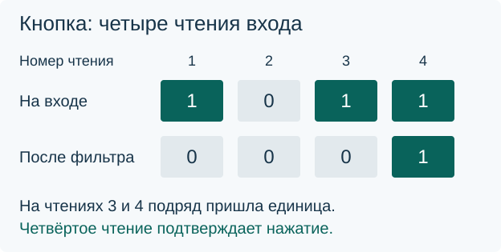

Обработка сигналов
Показания датчика образуют последовательность, например 4, 4, 9, 9, 4. По такой записи можно найти участки постоянного уровня, отличить устойчивое изменение от короткого скачка или подсчитать значения выше выбранного порога.
Где начинается и заканчивается серия
Серия — максимальный участок подряд идущих одинаковых значений. Здесь число 4 встречается в двух отдельных сериях.
| Индекс | 0 | 1 | 2 | 3 | 4 |
|---|---|---|---|---|---|
| Показание | 4 | 4 | 9 | 9 | 4 |
| Серия | A | A | B | B | C |
Серия B начинается в позиции 2 и заканчивается перед позицией 4. Такую границу записывают как полуинтервал [2, 4). Число отсчётов равно 4 − 2 = 2.
Функция возвращает тройки (начало, конец, значение). На этом примере получатся (0, 2, 4), (2, 4, 9) и (4, 5, 4).
Индекс start отмечает начало текущей серии. Как только значение изменилось, записываем готовую серию и переносим start. Последнюю серию записываем, когда end доходит до длины массива. Условие проверяет конец первым, и тогда or в Python и || в C++ пропускают чтение values[end].
C++17
#include <cstddef>
#include <tuple>
#include <vector>
using Run = std::tuple<std::size_t, std::size_t, int>;
std::vector<Run> runs(const std::vector<int>& values) {
std::vector<Run> result;
std::size_t start = 0;
for (std::size_t end = 1; end <= values.size(); ++end) {
if (end == values.size() || values[end] != values[start]) {
result.emplace_back(start, end, values[start]);
start = end;
}
}
return result;
}
Тот же алгоритм на Python
def runs(values):
result = []
start = 0
for end in range(1, len(values) + 1):
if end == len(values) or values[end] != values[start]:
result.append((start, end, values[start]))
start = end
return result
Если ищем импульс выше порога. Для ряда 4, 8, 9, 4 и порога 6 сравнения x > 6 дадут ложь, истина, истина, ложь. Так числа 8 и 9 попадут в один импульс [1, 3). Если в задаче нужен фон с обеих сторон, проверь отдельно импульсы у краёв записи.
Соседство в кольце требует дополнительного шага. Если линейных серий больше одной и значения первой и последней совпадают, эти две серии на кольце образуют одну. Храни их как два исходных полуинтервала, если нужны реальные индексы. Обработка серий занимает O(n).
Подтверждение устойчивого сигнала
При дребезге механической кнопки короткие смены уровня пропускают, а новый уровень принимают после непрерывного интервала устойчивости. В дискретной модели ниже новый уровень подтверждается после needed одинаковых отсчётов подряд. Счётчик сбрасывается при каждой смене сырого уровня. Начальное подтверждённое состояние равно 0, а needed > 0.
C++17
#include <cstddef>
#include <vector>
std::vector<int> stable_levels(const std::vector<int>& samples,
std::size_t needed) {
int confirmed = 0;
int candidate = 0;
std::size_t length = 0;
std::vector<int> result;
for (int value : samples) {
if (value != candidate) {
candidate = value;
length = 0;
}
++length;
if (length == needed) {
confirmed = candidate;
}
result.push_back(confirmed);
}
return result;
}
Тот же алгоритм на Python
def stable_levels(samples, needed):
confirmed = candidate = 0
length = 0
result = []
for value in samples:
if value != candidate:
candidate, length = value, 0
length += 1
if length == needed:
confirmed = candidate
result.append(confirmed)
return result

Измени отсчёты кнопки
Каждая кнопка ниже — один отсчёт. Нажми на него, чтобы сменить сырой уровень. Попробуй получить подтверждённую единицу уже на втором чтении. Затем увеличь требуемую длину серии.
| Чтение | 1 | 2 | 3 | 4 |
|---|---|---|---|---|
| Вход | ||||
| Длина серии | ||||
| Выход |
При нажатии металлические контакты могут несколько раз разомкнуться и снова коснуться друг друга. Вход микроконтроллера при этом успевает прочитать разные уровни. На рисунке показаны именно моменты чтения. Между ними вход мог переключаться ещё раз. В примере Arduino момент последней смены уровня запоминают и принимают новое состояние после заданной задержки. Пример Debounce, 2006–2016 · Откуда берутся отсчёты
При needed = 2 одиночная единица пропадает после следующего чтения. Разберём четыре отсчёта с начальным подтверждённым уровнем 0.
| Отсчёт | Кандидат | Длина серии | Подтверждённый уровень |
|---|---|---|---|
1 |
1 | 1 | 0 |
0 |
0 | 1 | 0 |
1 |
1 | 1 | 0 |
1 |
1 | 2 | 1 |
Каждый отсчёт обрабатывается один раз, поэтому время работы O(n). Для отсчётов с неравными интервалами удобнее сравнивать отметки времени. Вместо длины серии храни момент появления кандидата и проверяй прошедшее время. При анализе записи учитывай последнюю известную отметку, чтобы не предполагать устойчивость за её пределами.
Как перебрать существенные пороги
Для правила x >= threshold на целых числах состав выбранных элементов меняется только после перехода через наблюдаемое значение. Например, для значений 4 и 9 пороги 5, 6, 7, 8 и 9 выбирают один и тот же набор. Поэтому для поиска лучшего порога можно рассмотреть наблюдавшиеся значения и один порог выше максимума. Промежуточные пороги дают те же наборы.
Например, для отсортированного массива [4, 4, 9] достаточно трёх проверок.
| Порог | Какие элементы проходят | Сколько |
|---|---|---|
4 |
4, 4, 9 |
3 |
9 |
9 |
1 |
10 |
∅ | 0 |
Функции возвращают пары (порог, количество). Сортируем вход. При встрече новой группы одинаковых значений все элементы от начала группы до конца массива проходят порог. Из этих сведений можно построить оценку по своему критерию. Предполагаем, что max(values) + 1 помещается в знаковый 64-битный тип.
C++17
#include <algorithm>
#include <cstddef>
#include <utility>
#include <vector>
std::vector<std::pair<long long, std::size_t>>
threshold_counts(std::vector<long long> ordered) {
std::sort(ordered.begin(), ordered.end());
std::vector<std::pair<long long, std::size_t>> result;
for (std::size_t i = 0; i < ordered.size(); ++i) {
if (i == 0 || ordered[i] != ordered[i - 1]) {
result.emplace_back(ordered[i], ordered.size() - i);
}
}
if (!ordered.empty()) {
result.emplace_back(ordered.back() + 1, 0);
}
return result;
}
Тот же алгоритм на Python
def threshold_counts(values):
ordered = sorted(values)
result = []
for i, threshold in enumerate(ordered):
if i == 0 or threshold != ordered[i - 1]:
result.append((threshold, len(ordered) - i))
if ordered:
result.append((ordered[-1] + 1, 0))
return result
Сортировка и проход требуют O(n log n) времени. Когда порог ограничен заданными границами или при совпадении оценок нужен конкретный порог, отдельно выясни, какой представитель допустим в каждом промежутке.